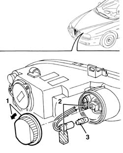

5540B48 bulbfor side light of one gas discharge lighting unit one lh or rh r r
- Path
- Procedures > 55 ELECTRICAL EQUIPMENT > 5540 EXTERIOR LIGHTING > 5540B headlamps > 5540B48 bulbfor side light of one gas discharge lighting unit one lh or rh r r
- Kind
- repair procedure (removal / refitting; the operation number is the code)
- Applies to
- all engines; all production periods
- Interactive page
- https://sloeber94.github.io/elrnDB-a156/en/#/3238455
Applies to: all engines; all production periods
 Removing
Removing
 Refitting
RefittingOpen the bonnet lid.
1. Rotate the cover in an anti-clockwise direction and extract it.
2. Extract the bulb holder and bulb (press fit).
3. Extract the bulb from the bulb holder.

Applies to: all engines; all production periods
Refitting
RemovingCheck the condition and the cleanliness of the lamp.
Insert the bulb in the bulb holder.
Fit the bulb holder with bulb in its seat.
Position the cover and rotate it in place.
Check that the side lights are working properly.